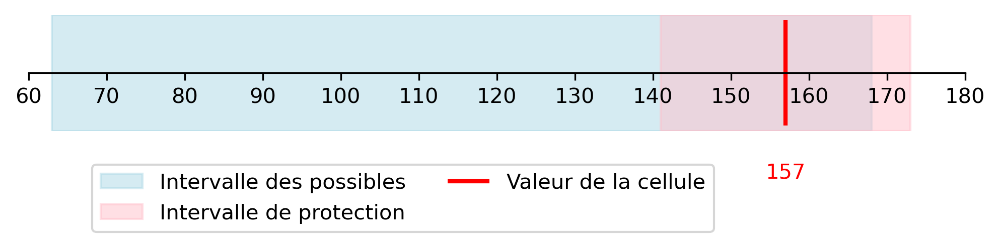

Pour données tabulées
Deux types de méthodes en fonction du moment où elles sont appliquées :
Regroupement des catégories et suppression de cellules.
| Nord | Ouest | Est | Sud | Total | |
|---|---|---|---|---|---|
| Polluante | 6 | 14 | 1 | 7 | 28 |
| Non polluante | 3 | 2 | 1 | 13 | 19 |
| Total | 9 | 16 | 2 | 20 | 47 |
Tableau 1 – Nombre d’entreprises polluantes par région
Y a-t-il des cellules à risque ?
Règle de fréquence : une cellule d’un tableau ne doit pas être construite à partir de strictement moins de n unités (n > 0).
Pour les données entreprises à l’Insee, n = 3.
| Nord | Ouest | Est | Sud | Total | |
|---|---|---|---|---|---|
| Polluante | 6 | 14 | 1 | 7 | 28 |
| Non polluante | 3 | 2 | 1 | 13 | 19 |
| Total | 9 | 16 | 2 | 20 | 47 |
Tableau 1 – Nombre d’entreprises polluantes par région
| Harpes | Piano | Orgues | Total | ||
|---|---|---|---|---|---|
| Nord | 58 | 71 | 92 | 221 | |
| Centre | 11 | 124 | 157 | 292 | |
| Sud | 36 | 24 | 60 | 120 | |
| Total | 105 | 219 | 309 | 633 |
Tableau 2 – Répartition des ventes d’instruments par région et par type, en millions d’euros
Y a-t-il des cellules à risque ?
| Région | Harpes | Piano | Orgues | Total |
|---|---|---|---|---|
| Nord | 58 (5) | 71 (17) | 92 (5) | 221 (27) |
| Centre | 11 (4) | 124 (11) | 157 (2) | 292 (17) |
| Sud | 36 (3) | 24 (6) | 60 (1) | 120 (10) |
| Total | 105 (12) | 219 (34) | 309 (8) | 633 (54) |
Tableau 2 – Répartition des ventes d’instruments par région et par type, en millions d’euros
Note : les valeurs entre parenthèses indiquent le nombre de contributeurs.
Secret primaire de fréquence.
| Région | Harpes | Piano | Orgues | Total |
|---|---|---|---|---|
| Nord | 58 (5) | 71 (17) | 92 (5) | 221 (27) |
| Centre | 11 (4) | 124 (11) | 157 (2) | 292 (17) |
| Sud | 36 (3) | 24 (6) | 60 (1) | 120 (10) |
| Total | 105 (12) | 219 (34) | 309 (8) | 633 (54) |
Tableau 2 – Répartition des ventes d’instruments par région et par type, en millions d’euros
Note : les valeurs entre parenthèses indiquent le nombre de contributeurs.
Règle de dominance (n,k) : une cellule est sensible si les n plus grands contributeurs de cette cellule représentent plus de k% du total de celle-ci.
Secret primaire de dominance.
| Région | Harpes | Piano | Orgues | Total |
|---|---|---|---|---|
| Nord | 58 (5) | 71 (17) | 92 (5) | 221 (27) |
| Centre | 11 (4) | 124 (11) | 157 (2) | 292 (17) |
| Sud | 36 (3) | 24 (6) | 60 (1) | 120 (10) |
| Total | 105 (12) | 219 (34) | 309 (8) | 633 (54) |
Tableau 2 – Répartition des ventes d’instruments par région et par type, en millions d’euros
Note : les valeurs entre parenthèses indiquent le nombre de contributeurs.
Règle du p% : une cellule est sensible si l’un des contributeurs a une cellule peut estimer la valeur d’un autre contributeur à p% de sa véritable valeur.
Secret primaire dû à la règle du p%.
| Région | Harpes | Piano | Orgues | Total |
|---|---|---|---|---|
| Nord | 58 (5) | 71 (17) | 92 (5) | 221 (27) |
| Centre | 11 (4) | 124 (11) | 157 (2) | 292 (17) |
| Sud | 36 (3) | 24 (6) | 60 (1) | 120 (10) |
| Total | 105 (12) | 219 (34) | 309 (8) | 633 (54) |
Tableau 2 – Répartition des ventes d’instruments par région et par type, en millions d’euros
Note : les valeurs entre parenthèses indiquent le nombre de contributeurs.
Les cellules catégorisées à risque pour la règle de fréquence, la règle de dominance et la règle du p% constituent le secret primaire. On ne peut pas diffuser ces cellules.
Comment faire ?
Redéfinir le contenu des variables de croisement en diminuant le nombre de leur modalités.
Permet de réduire fortement, voir d’enlever complètement le secret primaire.
Envisager cette option avant les autres méthodes.
| <25 | 25-30 | 30-50 | > 50 | Total | |
|---|---|---|---|---|---|
| Polluante | 2 | 5 | 7 | 6 | 20 |
| Non polluante | 8 | 15 | 17 | 20 | 60 |
| Total | 10 | 20 | 24 | 26 | 80 |
Tableau 3 – Nombre d’entreprises polluantes selon l’âge du dirigeant
Définir de nouvelles modalités pour augmenter le nombre de répondants par cellule.
| <28 | 28-35 | 35-55 | > 55 | Total | |
|---|---|---|---|---|---|
| Polluante | 3 | 6 | 6 | 5 | 20 |
| Non polluante | 9 | 17 | 19 | 15 | 60 |
| Total | 12 | 23 | 25 | 20 | 80 |
Tableau 3bis – Nombre d’entreprises polluantes selon l’âge du dirigeant
On cherche à publier le tableau suivant :
Un premier recodage consiste à regrouper tous les départements de travail hors du département de résidence dans une seule catégorie.
| 👍 | 👎 |
|---|---|
| Réduit le SP. | Ne supprime pas toujours totalement le SP. |
| Très simple à mettre en place. | Impossible dans certains cas (structure imposée, suivi dans le temps). |
Comment protéger le secret primaire restant ?
Première étape : supprimer les cellules ne respectant pas les règles du secret primaire.
| Nord | Ouest | Est | Sud | Total | |
|---|---|---|---|---|---|
| Polluante | 6 | 14 | X | 7 | 28 |
| Non polluante | 3 | X | 3 | 13 | 21 |
| Total | 9 | 16 | 4 | 20 | 49 |
Tableau 1 – Nombre d’entreprises polluantes par région
Ce n’est pas suffisant, les cellules sont liées entre elles par des équations (marges).
Deuxième étape : supprimer des cellules pour protéger le secret primaire.
| Nord | Ouest | Est | Sud | Total | |
|---|---|---|---|---|---|
| Polluante | 6 | X | X | 7 | 28 |
| Non polluante | 3 | X | X | 13 | 21 |
| Total | 9 | 16 | 4 | 20 | 49 |
Tableau 1 – Nombre d’entreprises polluantes par région
Plusieurs structures de suppressions (masques de secret) sont possibles.
| Nord | Ouest | Est | Sud | Total | |
|---|---|---|---|---|---|
| Polluante | X | 14 | X | 7 | 28 |
| Non polluante | X | X | 3 | 13 | 21 |
| Total | 9 | X | X | 20 | 49 |
Tableau 1 – Nombre d’entreprises polluantes par région
Cacher des cellules revient à diffuser des intervalles.
| Nord | Ouest | Est | Sud | Total | |
|---|---|---|---|---|---|
| Polluante | 6 | [11 ; 15] | [0 ; 4] | 7 | 28 |
| Non polluante | 3 | [1 ; 5] | [0 ; 4] | 13 | 21 |
| Total | 9 | 16 | 4 | 20 | 49 |
Intervalle des possibles : l’ensemble des valeurs possibles prises par la cellule supprimée après avoir posé le masque de secret.
Intervalle de protection : soit \(V_C\) la valeur d’une cellule C sensible à la règle de fréquence et \(m\%\) la marge protection choisie.
\[ [(1 - m\%) \cdot V_C ;\ (1 + m\%) \cdot V_C] \]
En pratique on choisit souvent une marge de 10%, \[ [90\% \cdot V_C ; 110\% \cdot V_C] \]
| Région | Harpes | Piano | Orgues | Total |
|---|---|---|---|---|
| Nord | 58 (5) | 71 (17) | 92 (5) | 221 (27) |
| Centre | 11 (4) | 124 (11) | 157 (2) | 292 (17) |
| Sud | 36 (3) | 24 (6) | 60 (1) | 120 (10) |
| Total | 105 (12) | 219 (34) | 309 (8) | 633 (54) |
Tableau 2 – Répartition des ventes d’instruments par région et par type, en millions d’euros
Note : glisser la souris sur les valeurs en secret primaire de fréquence pour voir les intervalles de protection.
Règle des intervalles : l’intervalle de protection de chaque cellule sensible doit être inclus dans son intervalle des possibles.
Cette règle permet de se prémunir d’une divulgation par inférence.
Exemple avec une marge de protection de 10%.
| Région | Harpe | Piano | Orgue | Autre | Total |
|---|---|---|---|---|---|
| Nord | 58 | 71 | 92 | 800 | 1021 |
| Centre | 11 | 124 | 157 (2) | 934 | 1226 |
| Sud | 36 | 24 | 60 (1) | 651 | 771 |
| Total | 105 | 219 | 309 | 2385 | 3018 |
Note : glisser la souris sur les valeurs en secret primaire de fréquence pour voir les intervalles de protection.
Exemple avec une marge de protection de 10%.
| Région | Harpe | Piano | Orgue | Autre | Total |
|---|---|---|---|---|---|
| Nord | X | 71 | X | 800 | 1021 |
| Centre | X | 124 | X | 934 | 1226 |
| Sud | X | 24 | X | 651 | 771 |
| Total | 105 | 219 | 309 | 2385 | 3018 |
Note : glisser la souris sur les valeurs en secret primaire de fréquence pour voir les intervalles de protection.
Exemple avec une marge de protection de 10%.
| Région | Harpe | Piano | Orgue | Autre | Total |
|---|---|---|---|---|---|
| Nord | [0;105] | 71 | [45;150] | 800 | 1021 |
| Centre | [0;105] | 124 | [63;168] | 934 | 1226 |
| Sud | [0;96] | 24 | [0;96] | 651 | 771 |
| Total | 105 | 219 | 309 | 2385 | 3018 |
Note : glisser la souris sur les valeurs en secret primaire de fréquence pour voir les intervalles de protection.
La borne supérieure de l’intervalle des possibles (168) est inférieure à la borne supérieure de l’intervalle de protection (173).
On peut inférer la valeur de la cellule à 7% et non 10%.
La cellule n’est pas suffisamment protégée.
On utilise un autre masque de secret …
| Région | Harpe | Piano | Orgue | Autre | Total |
|---|---|---|---|---|---|
| Nord | 58 | X | X | 800 | 1021 |
| Centre | 11 | X | X | 934 | 1226 |
| Sud | 36 | X | X | 651 | 771 |
| Total | 105 | 219 | 309 | 2385 | 3018 |
… avec d’autres intervalles des possibles.
| Région | Harpe | Piano | Orgue | Autre | Total |
|---|---|---|---|---|---|
| Nord | 58 | [0;163] | [0;163] | 800 | 1021 |
| Centre | 11 | [0;219] | [62;281] | 934 | 1226 |
| Sud | 36 | [0;84] | [0;84] | 651 | 771 |
| Total | 105 | 219 | 309 | 2385 | 3018 |
Avec cet autre masque de secret la cellule est suffisamment protégée.
Pour minimiser la perte d’information, il faut définir pour chaque cellule un coût associé à sa suppression.
Plusieurs possibilités :
| 👍 | 👎 |
|---|---|
| Outil qui fait référence. | Interface fouillis. |
| Performant sur la partie pose de secret grâce à une optimisation globale. | Bugs et erreurs pas faciles à comprendre et corriger. |
| Outil maintenu régulièrement. | Reproductibilité des opérations limitée. |
Un package R pour bénéficier des avantages de \(\tau\)-Argus tout en limitant les inconvénients.
Fonctionnement du package :
tab_rtauargus() : pour protéger un seul tableautab_multi_manager() : pour protéger plusieurs tableauxBesoin de retours utilisateurs : créer une issue sur github.
Ou nous contacter par .
Si on ne renseigne pas la hiérarchie, on peut retrouver la valeur cachée.
Lorsque la hiérarchie est renseignée, on protège bien les données.
Dans \(\tau\)-Argus les hiérarchies sont présentées dans un format particulier : fichier texte .hrc.
write_hrc2() permet de créer un fichier .hrc à partir d’une table de passageUtiliser la fonction tab_multi_manager() :
N.B. La pose du secret à chaque itération est effectuée avec \(\tau\)-Argus.
La fonction tab_multi_manager() fournit un journal sous forme de reporting (étapes pose secret).
Il faut repérer les liens entre les tableaux pour poser un secret qui les protège vraiment.
Les tableaux diffusés ne sont pas les mêmes que les tableaux à protéger.
Dans les cas d’indépendance il faut gérer séparément les différentes sous-demandes.
write_hrc2())| reg1 | reg2 | T | |
|---|---|---|---|
| tr1 | 5 | 10 | 15 |
| tr2 | 12 | 18 | 30 |
| tr3 | 5 | 5 | 10 |
| T | 22 | 33 | 55 |
CA couteaux
| reg1 | reg2 | T | |
|---|---|---|---|
| tr1 | 3 | 8 | 11 |
| tr2 | 6 | 20 | 26 |
| tr3 | 2 | 6 | 8 |
| T | 11 | 34 | 45 |
CA fourchettes
| reg1 | reg2 | T | |
|---|---|---|---|
| tr1 | 8 | 18 | 26 |
| tr2 | 18 | 38 | 56 |
| tr3 | 7 | 11 | 18 |
| T | 33 | 67 | 100 |
CA couverts
Lien entre les CA : “couverts = couteaux + fourchettes”.
Nouvelle variable de croisement : “type_couverts”.
| Région | Tr | type_couverts | chiffre_affaires |
|---|---|---|---|
| reg1 | tr1 | couteaux | 5 |
| reg1 | tr1 | fourchettes | 3 |
| reg1 | tr1 | couverts | 8 |
| … | … | … | … |
| Total | Total | couverts | 100 |
Ici, l’agrégat 50+ ne peut pas être bien emboîté dans la hiérarchie.
Créer un second tableau contenant uniquement la ventilation de 50+.
princ.hrc
<25
25-29
30-69
@30-49
@50-69
70+
alt.hrc
50-69
70+
Les méthodes de protection statistique des données confidentielles